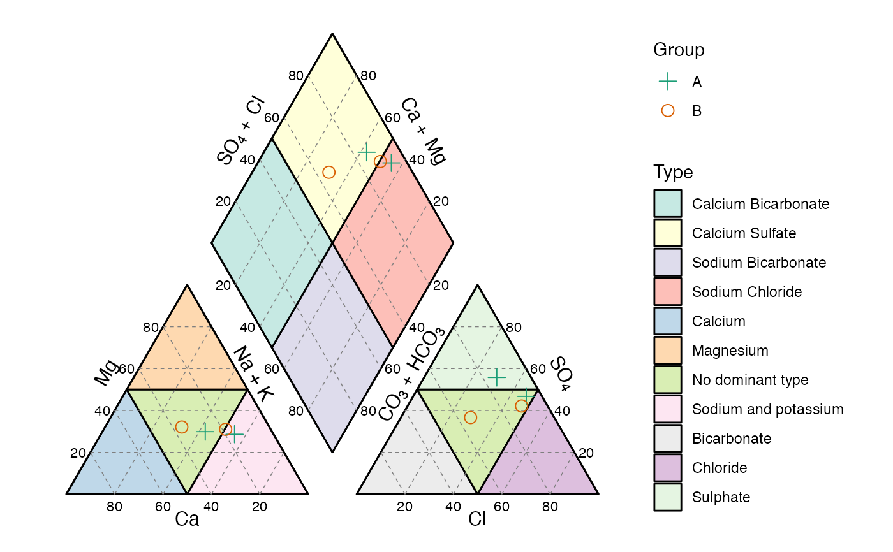

piper_diagram() draws a static Piper diagram with the water types It is a base diagram where data can be plotted.
Usage
piper_diagram(language = c("en", "es"), opacity = 0.5)Details
For ploting data the piper_data_prep() function should be used to transform the data in the proper format. After that the data has x and y coordinates, and these are the ones to use when plotting the data on piper_diagram().
The Piper diagram is a graphical representation used in hydrogeology and geochemistry to classify water types based on their chemical composition. It consists of two ternary diagrams (one for cations and one for anions) and a central diamond-shaped plot that combines the information from the two ternary diagrams. The diagram helps to infer the geochemical processes affecting the water, such as mixing, ion exchange, or mineral dissolution, and to identify the dominant ions in the water sample.
Examples
library(ggplot2)
d = data.frame(Group = c('A','A','B','B'),
Ca = c(120,150,110,52.6),
Mg = c(78,160,110,28),
Na = c(210,590,340,51.6),
K = c(4.2,2,3.6,2.3),
HCO3 = c(181,181,189,151),
CO3 = 0,
Cl = c(220,744,476,72.2),
SO4 = c(560,1020,584,126))
piper_data = piper_data_prep(d)
# adding data
piper_diagram() +
geom_point(aes(x,y,col=Group,shape=Group),
size=3,
data = piper_data) +
scale_color_brewer('Group',palette = 'Dark2') +
scale_shape_manual('Group',values = c(3,21))
